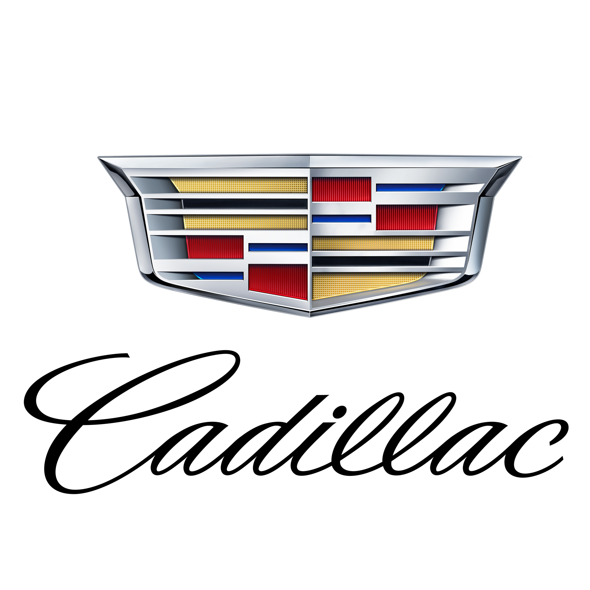

Ford Model T
El coche que “puso a América sobre ruedas”, famoso por ser el primer vehículo producido en masa con una línea de ensamblaje.
Ford Mustang (1964½)

Un ícono del “muscle car” americano, conocido por su diseño deportivo y su rendimiento.
Ford Thunderbird
Un elegante coche deportivo de lujo, competidor directo del Chevrolet Corvette en su época.
Ford Fairlane
Un sedán y coupé muy popular en los años 50 y 60, símbolo del estilo estadounidense de la posguerra.
Ford Torino
Otro clásico “muscle car”, famoso por sus potentes motores V8 y su aparición en películas y series (como Starsky & Hutch).
Ford Capri
Considerado el “Mustang europeo”, fue muy popular en Europa por su estilo deportivo y asequible.

Cadillac Series 62

Elegancia pura de la posguerra, con aletas traseras inspiradas en los aviones de combate. El modelo de 1959 con sus enormes aletas cromadas es uno de los coches más reconocibles del mundo.
Cadillac Eldorado

El nombre “Eldorado” simbolizaba lujo extremo, descapotable y con exceso de cromo, es un ícono del diseño americano.
Cadillac Fleetwood Series 60 Special
Era el auto preferido de políticos, empresarios y celebridades por su elegancia y confort.
Cadillac V16
Una obra maestra de ingeniería — 16 cilindros en los años 30, el auto más caro y exclusivo de su tiempo. Con interiores personalizados para cada cliente.
Cadillac CTS-V

Introdujo a Cadillac en la era de las altas prestaciones, con motor V8 supercargado y chasis deportivo y considerado como el “muscle car de lujo”.
Cadillac Seville

Representó el cambio de Cadillac hacia autos de lujo más compactos y modernos, combinó la elegancia europea con el confort americano.